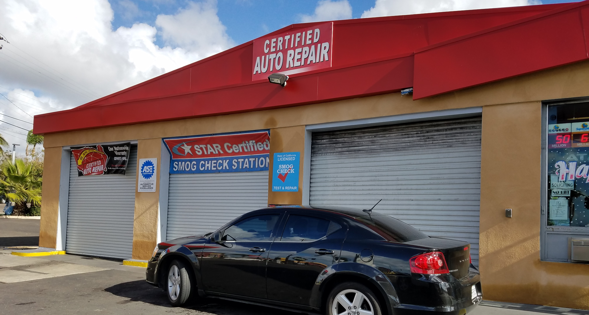

Address: 1803 Highland Ave, National City, CA 91950

Highland Service Station
Home
Location
Web Tools
Programs
Consumer Assistance Program
The Consumer Assistance Program (CAP) is a program administered by the California Bureau of Automotive Repair (Bar) to help people deal with their car's problem. The main goal of CAP is to help lower the amount of car's cuasing high emission. There are two different programs within CAP: Repair Assistance and Vehicle Retirement. Repair Assistance allows eligibal customers who's cars fails a Smog Check to recieive a maximum of $500 in emission-related repairs at STAR certified stations (Yes we are STAR certified). If a customer believes the repairs are not worth investing in, then this customer may have the option to get rid of their vehical through the Vehicle Retirement Program allowing them to receive up to $1,500. Note both programs have different requirements for eligibility. More information can be found on the the programs official Site.
Eligibility
Repair Assistance
To qualify your vehical must: have failed Smog Checks from previous years, not have modified systems, completed DMV registration (with all fees covered and expired registrations not being expired for more then 120 days), not be undergoing a transfer of ownership, be registered in the customers name (this means vehicles registered to businesses and non-profit organizations do not qualify), cannot have recieved CAP previous years, and the household income the is less then or equal to 225% of the federal poverty level. This is just a summary and you should ensure you qualify with official documentation.[English] [Espanol]
Vehical Retirenment
To qualify your vehical must: have previously been registered in California the past two years, must have failed its most recent Smog Check, not be going through initial registration, not be going through transfer of ownership, be registered in the customers name (this means vehicles registered to businesses and non-profit organizations do not qualify), not be dismantled or salvaged that hasnt re-registered with the DMV, completed DMV registration (with all fees covered and expired registrations not being expired for more then 120 days), and the vehicle must be a passenger vehicle, truck, SUV, or van (with gross weight less then 10,000 pounds).This is just a summary and you should ensure you qualify with official documentation.[English] [Espanol]